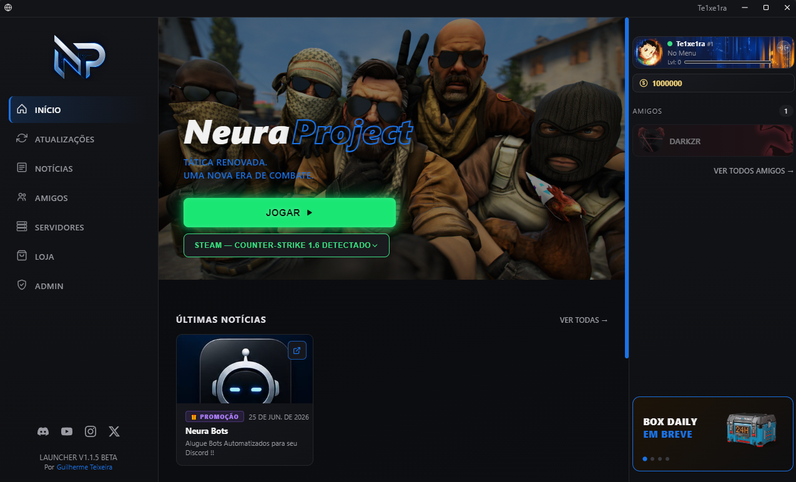

O launcher oficial do Neura Project. Detecta sua instalação do Counter-Strike 1.6, cuida das atualizações e organiza amigos, notícias e customização — tudo num só lugar.

Cada sistema do launcher resolve uma fricção real de quem joga CS 1.6 hoje: encontrar o jogo, manter tudo atualizado e ficar por dentro do que acontece na comunidade.
O launcher encontra sua instalação do CS 1.6 pela Steam. Se não achar, faz uma varredura nas pastas comuns do disco antes de pedir pra você apontar manualmente.
Novas versões do launcher chegam sozinhas, sem precisar reinstalar nada — você só abre e já está na versão mais recente.
Veja quem está online, entre direto no servidor de um amigo com um clique e deixe o Discord mostrar o que você está jogando em tempo real.
Converse com toda a comunidade em tempo real, direto no launcher — com foto, moldura e nível de cada um aparecendo na conversa.
Mapa, jogadores e status de cada servidor em tempo real, com entrada num clique — inclusive salas privadas protegidas por senha.
Banners, molduras animadas e insígnias pra deixar seu perfil com a sua cara dentro do launcher.
Novidades, promoções e avisos importantes aparecem direto na tela inicial — sem precisar sair do launcher pra saber o que mudou.
Baixe o launcher, faça login e o resto o Neura Project resolve — do jogo às atualizações.
Baixar para Windows